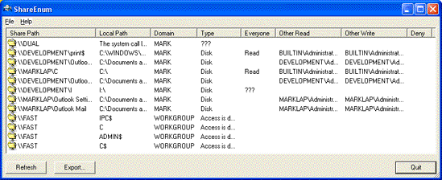

An aspect of Windows NT/2000/XP network security that's often overlooked is file shares. A common security flaw occurs when users define file shares with lax security, allowing unauthorized users to see sensitive files. There are no built-in tools to list shares viewable on a network and their security settings, but ShareEnum fills the void and allows you to lock down file shares in your network.
When you run ShareEnum it uses NetBIOS enumeration to scan all the computers within the domains accessible to it, showing file and print shares and their security settings. Because only a domain adminstrator has the ability to view all network resources, ShareEnum is most effective when you run it from a domain adminstrator account.
ShareEnum works on Windows NT/2000/XP.
Full source code to ShareEnum is provided. ShareEnum uses WNetEnumResource to enumerate domains and the computers within them and NetShareEnum to enumerate shares on computers.
Download ShareEnum (35 KB)
Download ShareEnum with Source Code (170 KB)